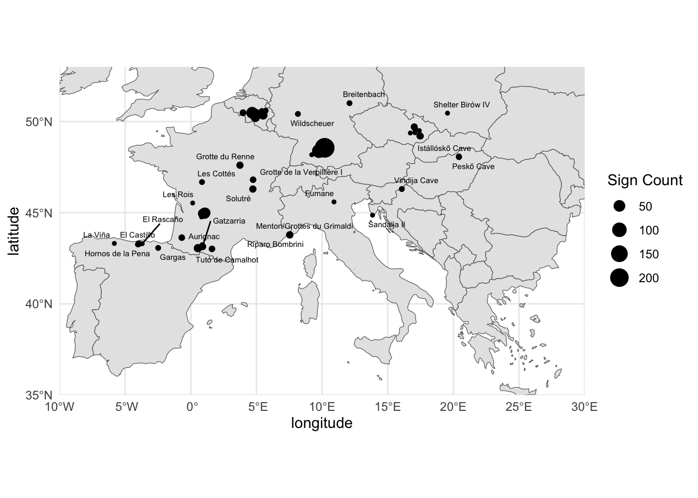
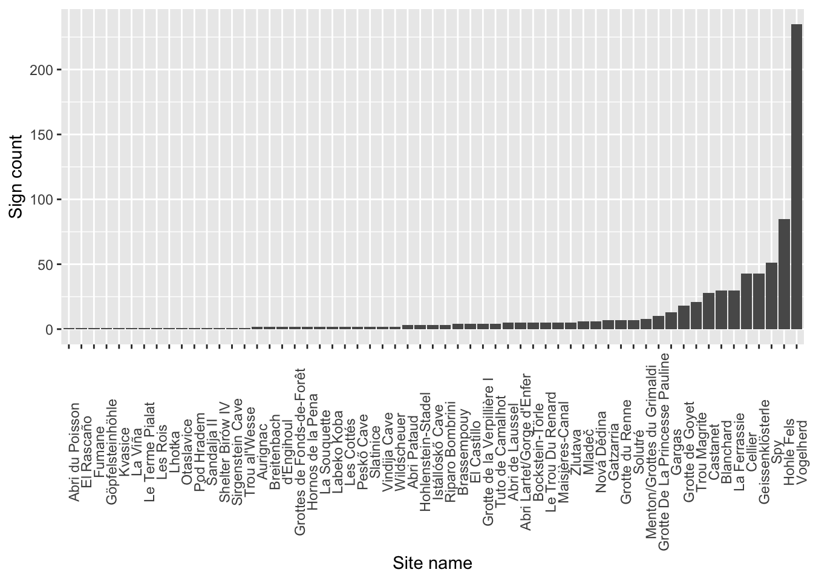
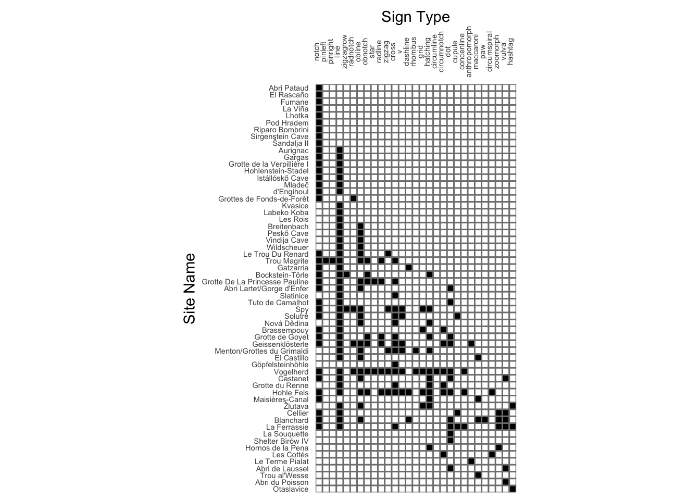
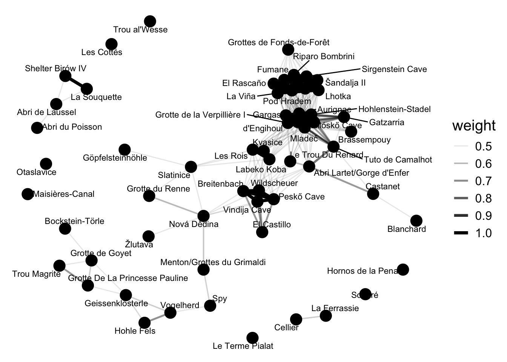
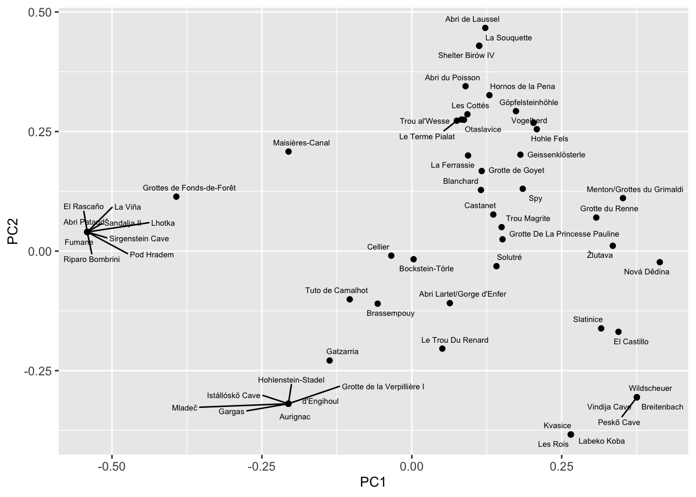
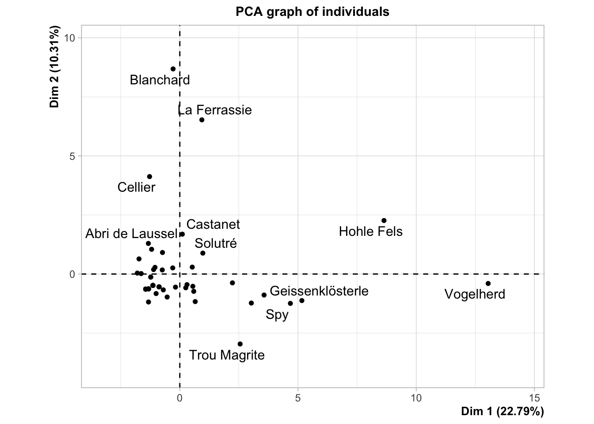
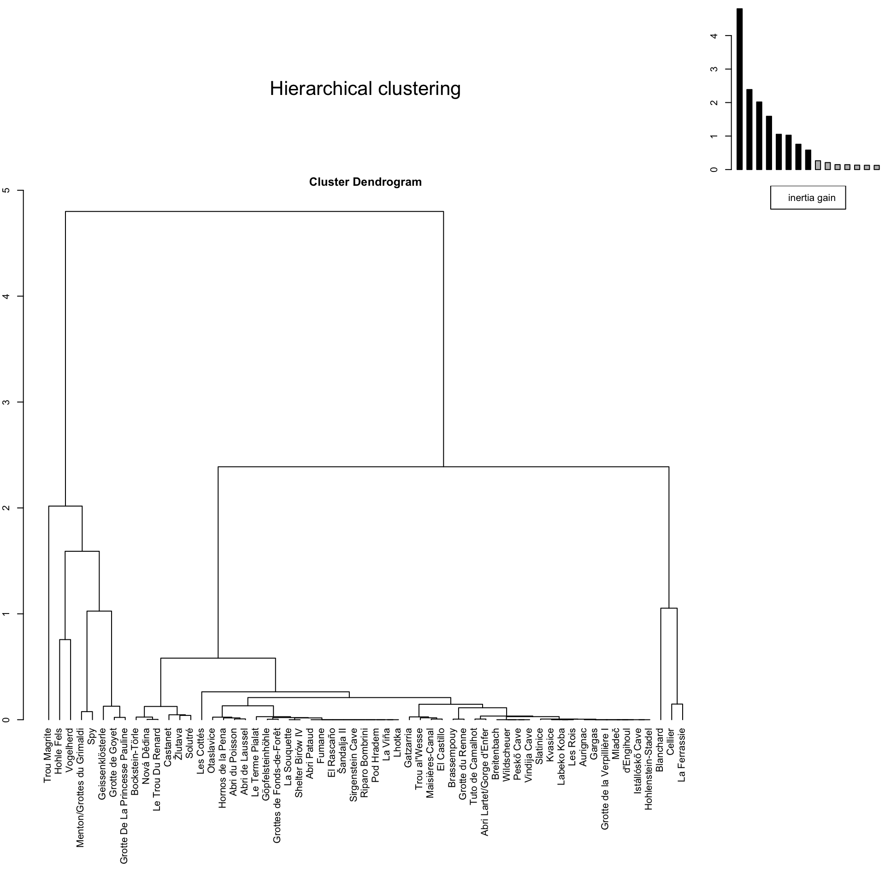
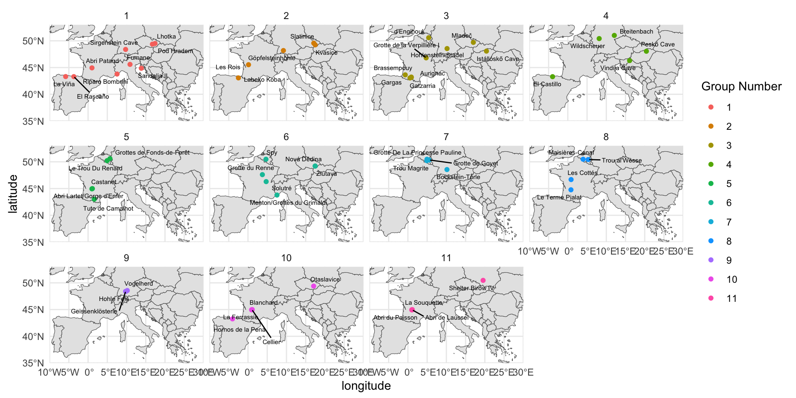
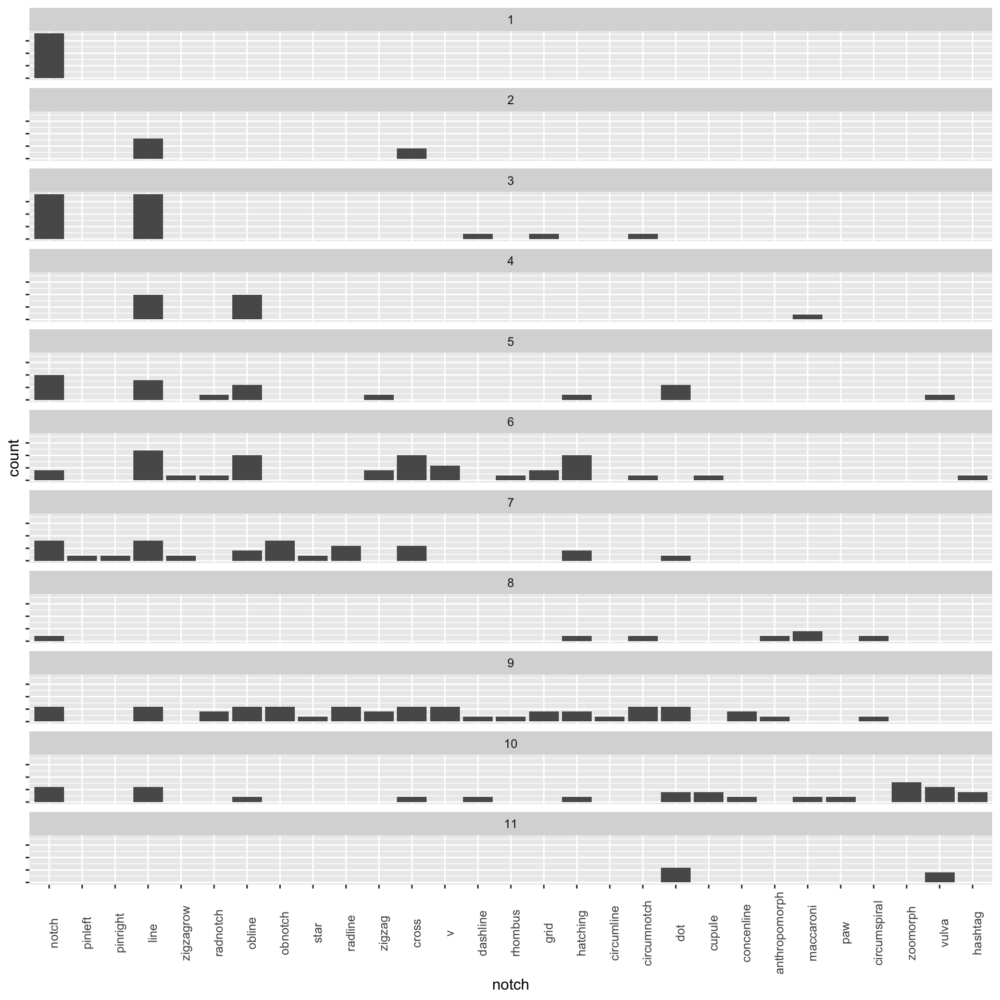
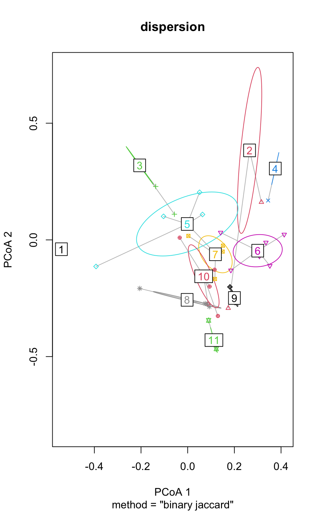

Preliminary Report on Using Geometric Signs Found on Paleolithic Mobile Objects to Identify Cultural Groups
Intro
SignBase, an open-access database collection of geometric signs on mobile objects from Paleolithic-era Europe, was launched in 2020, with the explicit goal being to enable quantitative analyses of abstract geographical representation (Dutkiewicz et al. 2020). The creators of the database identified around 30 distinct geometric sign types, and recorded their occurrences on mobile artefacts from the Paleolithic. In this paper, we will analyze the data from SignBase to see if we can find evidence of patterns indicating distinct cultural groups.
Background
Our understanding of the patterns of cultural and genetic diversity among the hominids of the Upper Paleolithic remains incomplete. Previous papers have attempted to use artefacts to represent and understand these patterns. Baker et al. (2024) performs analyses on data regarding personal ornamentation types from the Gravettian technocomplex in Europe to attempt to identify discrete cultural groups, finding an east to west cline of nine clusters. Similarly, Vanhaeren and d’Errico (2006) uses variation in beadwork patterns from the Aurignacian technocomplex as an indicator for linguistic diversity, finding fourteen geographically cohesive clusters.
In this paper, we use variation in geometric signs on mobile objects as an indicator of cultural difference. Baker et al. (2024) writes that “It is generally accepted that artefacts with exclusively symbolic functions, such as personal ornaments and mobiliary art, are more informative than functional objects when characterizing cultural and social systems as well as individuals’ role within society”. Vanhaeren and d’Errico (2006) also argue for the advantages of studying personal ornamentation as an indicator for cultural groups. Some of the reasons that they point to are their exclusively symbolic function, and the well-documented history of societies using personal ornamentation as cultural indicators. It is our belief that these qualities also apply to these mobile signs.
Our use of geometric signs, in particular, is also supported by Sauvet et al. (2018), in which the authors perform a correspondence analysis on geometric parietal signs to identify Upper Paleolithic cultural groups in the Cantabrian region of Spain. They write, “It has been proposed at various times that these graphic expressions, generally called ‘signs’, constitute veritable ‘identity markers’ that can be perceived at multiple levels. Within a group, they serve to signal the membership of an individual to a social status or category. In intergroup relationships, they can have a more general role as markers of territory or ethnicity”. They also point to other examples throughout history and various cultures of geometric signs being used as identity markers, thus establishing a precedent for considering signs as such in their study.
Similar to Lycett (2019), the isolation-by-distance framework serves as our null hypothesis in this study. As explained by Baker et al. (2024), the isolation-by-distance framework proposes that similarity in cultural features will be primarily determined by geographical distance. Assuming that this framework is true, we would hypothetically see patterns of cultural features of Upper Paleolithic hominids that are dispersed according to geography. Conversely, if geographic distance cannot account for the distribution of the sign types, we would have to assume that other factors are at play, namely, movement of groups or the creation of social networks.
As Whallon (2006) argues, mobility occurs among hunter-gatherers for multiple reasons. The first two reasons, referred to by Whallon as logistical and residential mobility, occur when groups move in order to procure a new supply of resources once the more immediate ones have been depleted. Another type of mobility defined by Whallon is network mobility, in which groups, or subsets of groups, move in order to make contact with other groups. This occurs in order to form a “safety net”, as Whallon puts it, in times of scarce resources, so that groups are assured of a positive reception if they are forced to move. Lastly, and similarily, is informational mobility, in which groups, or individuals, move with the primary goal of gathering information, typically about the environmental conditions and resources in other areas. Again, this operates as a “safety net” of sorts, in that these groups then posses knowledge on where to move in times of resource scarcity.
Having established that, and knowing that the Paleolithic people were hunter-gatherers, we can then turn our eye to the sign type variation. If the isolation-by-distance framework cannot account for the sign type distribution, and if we are able to identify strong clusters of sites by sign types, it is possible that the distribution of sign variation may indicate group movement.
Data
The data used was published in the SignBase database (https://www.signbase.org). It consists of 531 artifacts found at 65 sites in 13 countries. The database records 31 geometric sign type found on these artifacts. We decided to exclude any sign counts if they fell under the “other” category, as the wide range of possibilities that could qualify as “other” means that it would be difficult to establish a definitive connection. We also decided to exclude the data from five sites: Willendorf, Riparo di Fontana Nuova, Muralovka, Shanidar Cave, and Hayonim Cave. Willendorf was excluded because its only sign count fell under the “other” category, and the rest were excluded due to geographic distance from the other sites. After those sites were excluded, all signs under the “rectangle” category were also removed as a side effect of that exclusion.
These decisions brought our data down to 516 artifacts found at 59 sites in 9 countries, encapsulating 30 sign types. The graph below shows the geographic distribution sites included in the study, with the point size corresponding to the number of signs at each site.
The artifacts in question are determined to have been made in the Paleolithic era, specifically in the Aurignacien technocomplex. The calibrated radiocarbon dates of the artifacts range from approximately 27,691 BP to 44,778 BP, spanning an overall time range of 17,087 years.
Identification and categorization of the sign types had already been performed by the creators of the SignBase database, the methods for which are described in Dutkiewicz et al. (2020), and we adhered to those categories and placements.
Methods
Before attempting to identify connections between sites or groupings in the data, we had to decide whether to factor sign abundance into our considerations. As we can see in the above map and the below graph, abundance is somewhat variable among the sites, with Vogelherd serving as a more extreme outlier.

In order to decide whether to factor in abundance, we followed the lead of Lycett (2019), and generated a Euclidean distance matrix measuring the differences in site abundance for each site, and ran a mantel test to determine if there was a correlation between the Euclidean matrix, and a Jaccard distance matrix for sign presence or absence. We found that there was not a significant correlation (P = 0.19, Mantel R = 0.062), meaning that the results would not liekly be affected by the exclusion of abundance, and made the decision to exclude abundance from the data in order to prevent the results from being affected by outliers like Vogelherd.
Our second question in approaching the data was to investigate how much of the sign distribution was the result of geographic distance. In order to answer that question, we ran another mantel test, this time comparing a geographic distance matrix with our Jaccard matrix measuring sign presence or absence for each sign type. We found that there was no significant statistical correlation between the two (P = 0.529, Mantel R = -0.007). These results tell us that the distribution of sign types cannot be chalked up to distance, and that there must be other factors at play in explaining the distribution.
Having established the former, we then proceeded to attempt to identify patterns in the data using a combination of the following methods and visuals. Firstly, we performed a seriation analysis on the data, arranging the sites by sign similarity only, the results of which can be seen below.

Next, we generated a network analysis of the Jaccard matrix, which showed us the similarities and strength of connections between the sites based on sign similarity. Again, this figure arranges the sites based on similarity in sign type distribution.

We also performed a principal coordinate decomposition analysis (PCoA) on the Jaccard Matrix, as well as a principal component analysis (PCA). We then performed a hirearchical clustering upon that PCA, the results of which can be seen below.



We used these results, as well as the raw similarity data from the Jaccard matrix, in order to group the sites together based on sign similarity.
Results
As we can see from the visuals, there are a few definite group clusters which are immediately identifiable. For the rest, we compared the visuals with each other, as well as the Jaccard indices between sites, in order to determine the optimal grouping. We organized the sites into 11 groups, as seen below.
| Group | Site Names |
|---|---|
| 1 | Abri Pataud, El Rascaño, Fumane, La Viña, Lhotka, Pod Hradem, Riparo Bombrini, Sirgenstein Cave, Šandalja II |
| 2 | Kvasice, Labeko Koba, Les Rois, Slatinice, Göpfelsteinhöhle |
| 3 | Aurignac, d’Engihoul, Istállóskő Cave, Hohlenstein-Stadel, Gargas, Grotte de la Verpillière I, Mladeč, Brassempouy, Gatzarria |
| 4 | Wildscheuer, Breitenbach, Peskő Cave, Vindija Cave, El Castillo |
| 5 | Tuto de Camalhot, Abri Lartet/Gorge d’Enfer, Castanet, Le Trou Du Renard, Grottes de Fonds-de-Forêt |
| 6 | Nová Dědina, Menton/Grottes du Grimaldi, Grotte du Renne, Solutré, Žlutava, Spy |
| 7 | Trou Magrite, Grotte De La Princesse Pauline, Grotte de Goyet, Bockstein-Törle |
| 8 | Trou al’Wesse, Maisières-Canal, Les Cottés, Le Terme Pialat |
| 9 | Vogelherd, Hohle Fels, Geissenklösterle |
| 10 | Cellier, Blanchard, La Ferrassie, Hornos de la Pena, Otaslavice |
| 11 | La Souquette, Shelter Birów IV, Abri de Laussel, Abri du Poisson |


In order to test the strength of the groups, we ran a modularity test on the groupings, resulting in a score of 0.7945326. We also ran a perMANOVA test, producing an R-squared value of 0.5744016 and a P value of 0.001, and a multivariate homogeneity test of group dispersions, resulting in the visual seen below.

As we can see, the strength of these groupings is quite high. The perMANOVA test tells us that 52% of the variability in the sign distribution can be attributed to group membership, and the modularity score tells us that the groupings have a strong community structure. We can also see from Figure 11 that the overlap between groups is fairly minimal.
Discussion
In this study, we saw that the isolation-by-distance framework could not account for the distribution of sign types. Specifically, our Mantel test found no statistically significant relationship between geographic distance and sign variation. Therefore, we must look to other factors to explain the distribution.
As explained earlier, mobility for various reasons is commonly found in hunter-gatherer groups. Therefore, one explanation for the sign type distribution could be that the site groups represent cultural groups, as indicated by sign type patterns, and the geographic distribution between sites represent group mobility. The mobility may have occurred for all the reasons listed earlier. One point of note is that Whallon writes that decorative objects may be exchanged as a method of network formation, which may account for the presence of some signs at some sites.
Further research will need to be done on this topic in order to understand these patterns. In particular, the ecological and biogeographical conditions at the sites will need to be analyzed for potential connections, as mobility is heavily environmentally-motivated. Additionally, further analysis of the sign type categories as created by Dutkiewicz et al. (2020), as it is possible, when it comes to the simpler signs, for identical creation to occur independently.
However, this preliminary research has been able to produce some conclusions to be reasonably confident in. Firstly, we know, definitively, that distribution and variation of sign types is not the result of geographic distance. Secondly, we have found clusters of sites that correspond in sign type, possibly indicating mobility of specific cultural groups. These conclusions contribute to, and broaden our current understanding of cultural and biological diversity among Upper Paleolithic hominids in Europe.
References
Baker, Jack, Solange Rigaud, Daniel Pereira, Lloyd A Courtenay, and Francesco d’Errico. 2024. “Evidence from Personal Ornaments Suggest Nine Distinct Cultural Groups Between 34,000 and 24,000 Years Ago in Europe.” Nature Human Behaviour 8 (3): 431–44.
Dutkiewicz, Ewa, Gabriele Russo, Saetbyul Lee, and Christian Bentz. 2020. “SignBase, a Collection of Geometric Signs on Mobile Objects in the Paleolithic.” Scientific Data 7 (1): 364. https://doi.org/10.1038/s41597-020-00704-x.
Lycett, Stephen J. 2019. “Confirmation of the Role of Geographic Isolation by Distance in Among-Tribe Variations in Beadwork Designs and Manufacture on the High Plains.” Archaeological and Anthropological Sciences 11 (6): 2837–47. https://doi.org/10.1007/s12520-018-0742-3.
Sauvet, Georges, Raphaëlle Bourrillon, Diego Garate, Stéphane Petrognani, Olivia Rivero, Eric Robert, and Gilles Tosello. 2018. “The Function of Graphic Signs in Prehistoric Societies: The Case of Cantabrian Quadrilateral Signs.” Quaternary International, SI: Role of art in prehistory-UISPP2014, 491 (October): 99–109. https://doi.org/10.1016/j.quaint.2017.01.039.
Vanhaeren, Marian, and Francesco d’Errico. 2006. “Aurignacian Ethno-Linguistic Geography of Europe Revealed by Personal Ornaments.” Journal of Archaeological Science 33 (8): 1105–28. https://doi.org/10.1016/j.jas.2005.11.017.
Whallon, Robert. 2006. “Social Networks and Information: Non-‘Utilitarian’ Mobility Among Hunter-Gatherers.” Journal of Anthropological Archaeology, Mesolithic mobility, exchange, and interaction, 25 (2): 259–70. https://doi.org/10.1016/j.jaa.2005.11.004.